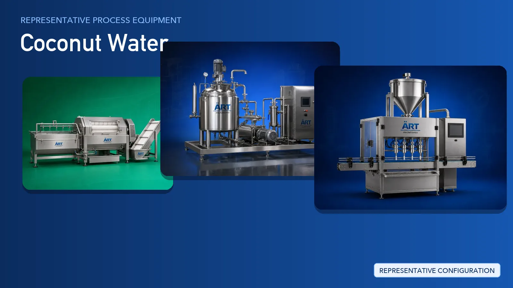

Coconut Water Plant & Machinery Solutions (Extraction, Thermal Treatment & Packing)
Coconut water is a natural beverage drawn from young and mature coconuts and sold as a packaged ready-to-drink product in retail, HoReCa and export markets.

About Coconut Water processing
ART Mechatronics provides complete turnkey solutions for coconut water processing and packing plants, offering systems for intake handling, washing, dehusking and shell removal, filtration, thermal treatment, chilling, filling, capping and secondary packing. Our solutions are designed for hygienic food-grade operation, consistent product quality and automated production for global markets.
Complete Coconut Water Process Flow
Young and mature coconuts are received, unloaded and fed into the line.
Ensures continuous and controlled input.
Coconuts are washed to remove field soil, husk debris and surface contamination before opening.
Ensures hygiene and food safety.
The husk and shell are removed so the liquid can be drawn without contamination.
Ensures:
- Clean opening of the nut
- Separation of husk and shell for by-product use
- Reduced product loss
Coconut water is collected and passed through filtration to remove shell fragments, pulp and fine solids.
Produces:
- Clear, particle-free liquid
- Uniform batch ready for treatment
Filtered coconut water is heat treated under controlled conditions to stabilise the product.
Ensures:
- Microbial safety
- Extended shelf life
- Retention of natural taste
Treated coconut water is cooled and held under hygienic conditions before filling.
Maintains product quality up to the filling stage.
Coconut water is filled into bottles, cans or pouches, sealed, coded and packed for dispatch.
Suitable for retail, HoReCa and export packs.
Inspection and dispatch support:
Machinery Required for Coconut Water Plant
Turnkey Coconut Water Plant Solutions
ART Mechatronics offers complete turnkey solutions for coconut water processing and packing plants, including:
- Process design & plant layout
- Intake, washing and dehusking systems
- Filtration and thermal treatment systems
- Chilling and hygienic storage
- Automation & control panels
- Filling, capping and packaging line integration
- Installation & commissioning
- After-sales support
We customize solutions based on:
- Coconut type (young or mature)
- Production capacity
- Thermal treatment requirement
- Packaging format (bottle, can, pouch)
Why Choose ART Mechatronics for Coconut Water
- Expertise in beverage and liquid processing systems
- Hygienic food-grade machinery design
- Integrated thermal treatment and chilling systems
- Automated filling and packing line integration
- Consistent product quality batch after batch
- Global export capability
Machinery in a Coconut Water plant
Where it's used
Get pricing & specs for the Coconut Water plant
Share the product, target capacity, current process and plant location. These details help our engineers discuss the right machine or line configuration.
One partner, from design to start-up
ART Mechatronics designs, manufactures, installs and commissions your Coconut Water plant solution with regional presence in India, UAE and Thailand.